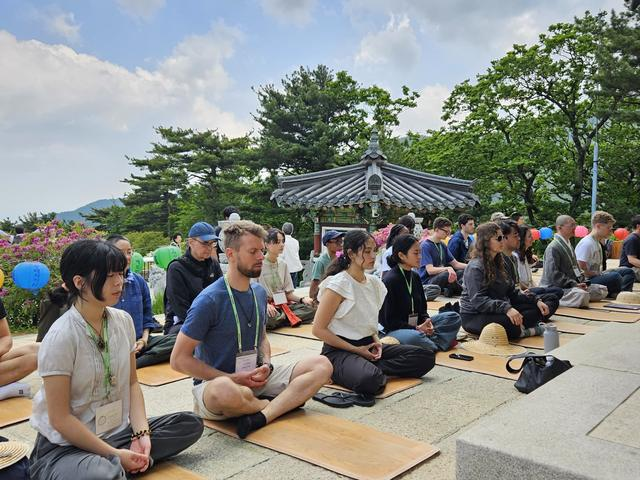
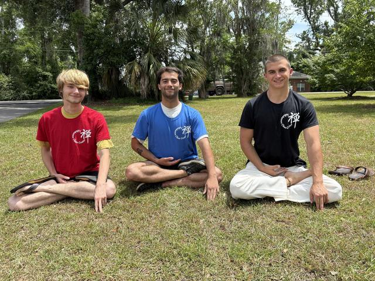
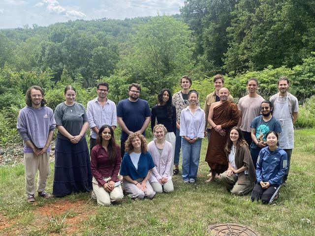
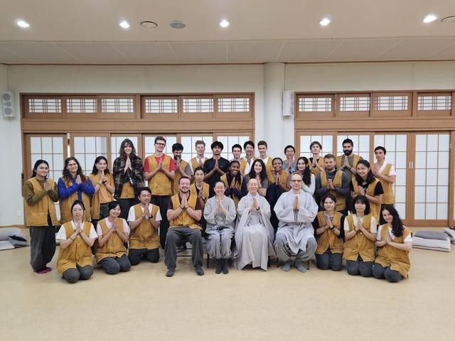

Opening Buddhist Traditions to the Next Generation
We connect young practitioners to Buddhist teachers and practice centers, and remove the conceptual, logistical, and financial barriers that keep people from going deep.
Lyndsey is rewording this blurb. The removed tag said “donation-based” and “ages 18–35”, which help search and tell newcomers and donors who DG is for. Should the blurb keep them?
A Grassroots Nonprofit for Deep Practice
Dharma Gates is a grassroots nonprofit dedicated to opening pathways into formal meditation practice for young adults. We connect young practitioners to a variety of Buddhist teachers and practice centers, working to eliminate conceptual, logistical, and financial barriers to practice. We foster connections through which practitioners can cultivate compassion, resilience, and clarity to meet the unique challenges of our times.
DG’s homepage now says “501(c)(3) nonprofit” where this says “grassroots nonprofit”. Which should it say? Lyndsey may send a group photo for the photo version. Once DG’s logo is final, it can sit with this statement (10/22).

Retreats & Events
All Retreats →Every program is offered freely, by donation.
Rows come from Retreat Guru: DG enters a program there once and it shows here.
- Loading upcoming retreats…
Our Three Pillars
Placeholder copy and art: Lyndsey is writing the pillar copy; where the pillars link is a team question (DECISIONS #66).
Deep Practice
Dharma Gates offers young adults (18–35) a range of immersive introductory experiences to meditation practice in a variety of Buddhist traditions — in person and online, with a wide breadth of facilitators and teachers, emphasizing accessibility, diverse perspectives, and depth of training.


Sangha
Informal gatherings and relational practices that connect practitioners with each other and with teachers, so practice doesn’t end when the retreat does.


Dana
We support young adults in developing the compassion and resilience that formal meditation training cultivates, so they can serve skillfully in a world that needs it.


So Far, Dharma Gates Has…
Participant Experiences
“Incredible. It cracked my heart open.”
“One of the most transformational weeks of my life.”
“This retreat felt like holy medicine.”
“It brought me home to who I’ve always been.”
“Never knew how powerful it is to sit with community in silence.”
“Would not be accessible without the low cost — grateful for the opportunity.”
These six quotes are shortened from DG’s Testimonials page. Lyndsey is sending longer ones from DG’s bank.
A Glimpse into Dharma Gates: How Young People Feel About Our Retreats
Participants share, in their own words, what they found on retreat.
Draft copy.

More About Dharma Gates
What does Dharma Gates do?
Dharma Gates offers donation-based Buddhist meditation retreats, classes, and events to young adults 18-35. Dharma Gates partners with authorized teachers and facilitators from a wide breadth of Buddhist traditions to allow for a diversity of perspectives. Dharma Gates currently offers around 13 multi-day retreats per year around the USA and several immersive daylong events annually. Click here to check out upcoming retreats and offerings!
Why does Dharma Gates offer retreats and programs exclusively for young adults?
Dharma Gates believes in creating the most welcoming environment possible to invite young adults into deep practice. That means creating spaces where young people can practice among peers who share similar life questions and concerns as them. Dharma Gates also recognizes the economic insecurities young adults often face, which can make it difficult to attend a meditation retreat, which is why the organization offers retreats by donation to young people.
Where can I find an affordable meditation retreat?
All meditation retreats run by Dharma Gates are entirely donation-based. The mission of Dharma Gates is to create financially-accessible, high quality meditation offerings for young adults 18-35. All retreats and programs by Dharma Gates are offered by dana, which is a Pali word for generosity. For more information about our dana-culture, click here.
Is Dharma Gates affiliated with a particular teacher, lineage, or tradition?
Dharma Gates is a Buddhist organization, but is not affiliated with one particular teacher, lineage, or specific Buddhist tradition. The Advisory Board of Dharma Gates is comprised of teachers from a number of different branches of Buddhism, and meditation retreats are offered within a variety of Buddhist styles and lineages to allow our participants to discover what works best for them.
Do I need to be Buddhist to go on a meditation retreat with Dharma Gates?
Although all Dharma Gates retreats are run by Buddhist teachers, participants do not need to identify as Buddhist to attend retreat. Dharma Gates welcomes young adult practitioners from all backgrounds and walks of life.
I’ve never attended a meditation retreat before. What’s it like?
Every retreat Dharma Gates offers is unique, and varies depending on the teacher, their tradition, and the intention of that particular program. But here are common threads between all Dharma Gates meditation retreats that one can expect to experience:
- A warm and friendly peer-led environment. Dharma Gates retreat managers are fellow young adult practitioners who are experienced in facilitation and are there to help you feel safe and comfortable.
- A schedule to follow that includes elements like meditation periods, talks given by the teacher, meal times, cleaning periods, and break times. Schedules are posted around the venue so you know where to be, and when.
- Full-time silence or partial silence. Many Dharma Gates retreats are held in “noble silence”, which means participants do not speak unless they’re prompted to by the teacher in a Q&A or 1-on-1 interview, or when it’s necessary to accomplish a task (i.e. asking for instructions when helping in the kitchen). This supports participants to go deeper into practice, and allows them to be free of some of the relational conventions and distractions of everyday life.
- Taking a break from tech use. Retreat managers invite participants to hand in their phones at the beginning of retreats. Phones, laptops, and other connective devices are not allowed to be used during retreat times. Retreat managers will have phone access throughout retreats in case of emergencies, and emergency contact numbers will be provided so that participants can give them to loved ones.
- Lots of meditating! Depending on the type of retreat, participants will be in meditation anywhere between three and eight hours per day. Often meditation is seated, but sometimes teachers instruct participants in walking meditation, standing meditation, or laying down meditation. Chairs and meditation props may be used for support with seated practice.
- Delicious vegan meals. Dharma Gates works with cooks who nourish retreat participants with freshly-made plant-based meals, with a focus on local and organic ingredients. Retreat cooks are able to accommodate most dietary allergies with enough advance notice.
- Leaving feeling more at peace within your own mind, more loving toward others and the world around you, and more attuned to your environment. These aren’t lofty aspirations, they’re just what usually happens! Retreat offers us a wonderful opportunity to transform our relationship to life.